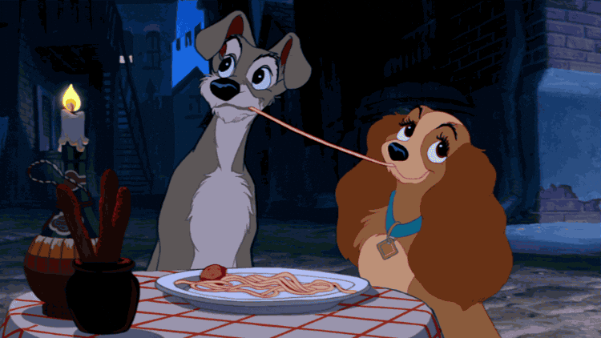

Lady and the Tramp's Spaghetti and Meatballs

Description
Spaghetti and Meatballs is a a classic dish found on the menu of many Italian and European
restaurants, and a really tasty one!
Try serving them as a part of a romantic dinner! Who knows, it may even end up where Lady and the Tramp did 😉
Ingredients
- 1 pound beef mince
- 1/4 cup fresh onion minced
- 2 tbsp dried breadcrumbs
- 1/4 tsp garlic salt
- 1/4 tsp pepper
- 1 large egg white lighty beaten
- 1 jar fat free tomato and basil pasta sauce
- Cooking spray
- 5 cups cooked spaghetti
- 5 tbsp parmesan sauce
- 5 tbsp fresh basil chopped
Steps
- Combine the beef mince, onions, breadcrumbs, garlic salt, pepper and egg white together.
- Stir in two tablespoons of the pasta sauce and shape the beef mince into 1 inch meatballs.
- Heat a pan coated with cooking spray and fry the meatballs on all sides for 6 minutes.
- Add the rest of the pasta sauce and cover the pan, turning the flame down to low.
- Simmer the meatballs for ten minutes.
- Place the spaghetti in a serving sigh and pour the meatball sauce over the spaghetti.
- Garnish with the cheese and basil and serve!
Go back